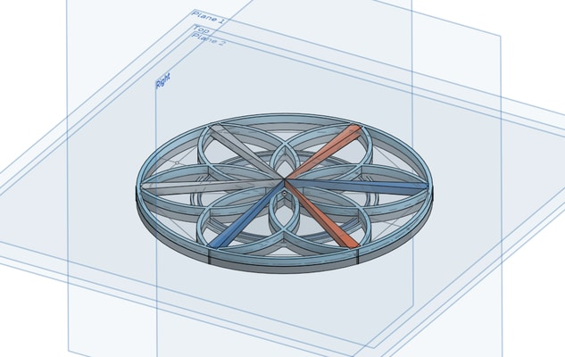
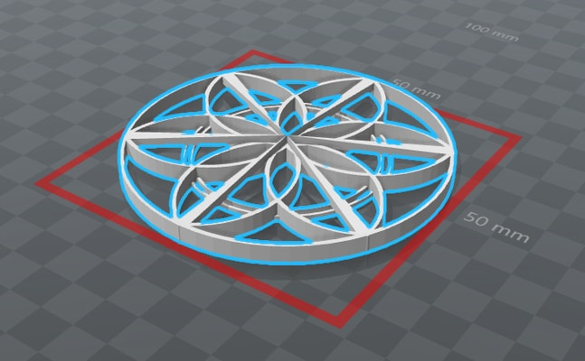
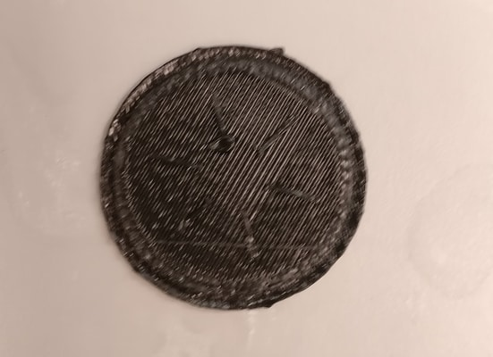
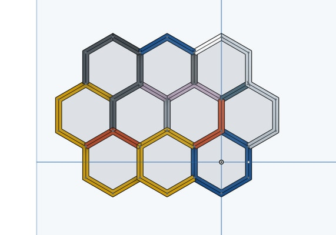
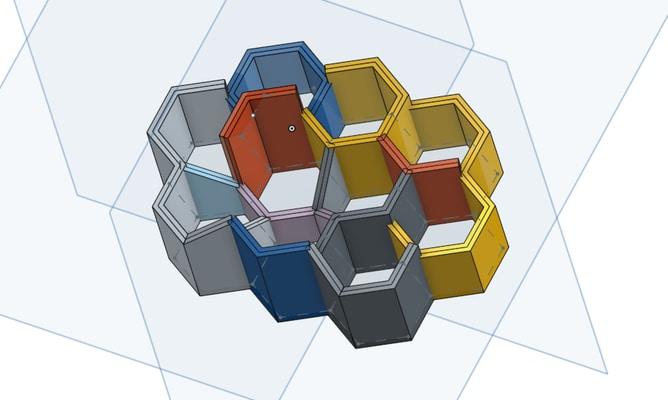
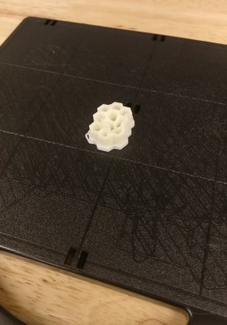
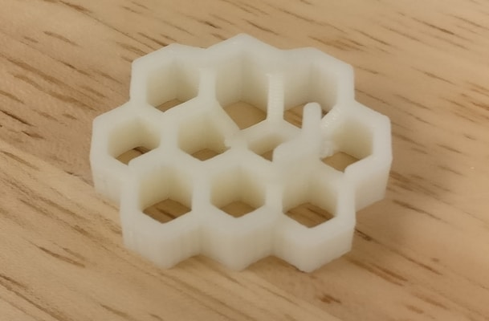
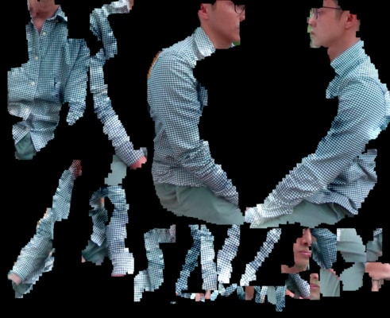
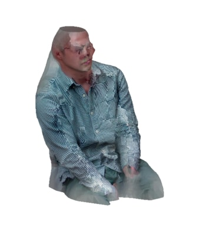

In short, 3D printing this week was full of failures. To CAD, I used Onshape. Also in short, this was a week of learning how to CAD for 3D printing.
For my first attempt, I would try making a dream catcher.
 I made the mistake of not making sure that the gcode would render correctly before spending too much time designing it. After some time, I went ahead to send it to the 3D printer. It didn't look good, there was a lot of support material. It would take less than 30 minutes so I went ahead with it anyway.
I tried a few more times, trying different support settings and orientations. No luck, I gave up for the today and tried a new design.
My next thought was to construct a honeycomb structure.
 The top level view looks symmetric and neat. The angled view shows some of the other features. Basically, this is me trying to learn how to use Onshape. I tried the printing process again. This one also took ~30 minutes.
This one turned out much better. Or perhaps it's because I tried a different printer. This one in particular uses support material that then you need to put in a bath to remove. This is much different from the Sindoh printer from before, which applies the support material directly and is meant to be broken off. I'm not sure how to design accordingly dealing with these two different types of printers - will need to investigate more.
I ended up not even needing to use the bath. There was very little support material needed and I could simply break it off.
This part was fun. The basic setup was to fix the 3d scanner to a tripod. The object was then placed on a chair and you would rotate the chair to get the different angles.
I tried a lot of small objects, but was met with little success. Then I tried to just sit in the chair and scan myself. It was a bit tricky. I was alone so I had to hide the mouse so I could click finish without messing up the scan. This turned out way better than expected.
I used the software feature to solidify the scan. Looks cool. Wasn't able to my face to scan well, though.
